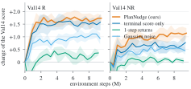

Motivation
Diffusion-based planners model the multimodal driving behavior in human demonstrations. However, they still collide or leave the road in closed-loop driving, due to covariate shift. RL post-training can address this, but RL on a diffusion-based planner has two difficulties.
Difficulty 1: iterative denoising
A plan comes from K denoising steps. Policy-gradient methods treat every step as one RL action, so the RL horizon becomes K times longer. Here K = 10.
RL horizon of one episode with 150 planning steps:
- Finetuning the planner:
- PlanNudge:
Diagram
an RL action frozen, a part of the environment
Difficulty 2: receding-horizon execution
The planner outputs 80 waypoints (8 s), but the vehicle follows each plan for only 0.1 s before the next plan arrives. Only the beginning of a plan matters for what the vehicle does.
Finetuning the planner: 240 dimensions, and most of them are discarded. PlanNudge: 2 dimensions, and both matter.
Animation and diagram
the action space matters for what the vehicle does next mostly discarded: the next plan replaces it
How do existing methods handle the two difficulties?
- Iterative denoising: modeled as a Markov decision process, at the cost of a K times longer RL horizon.
- Receding-horizon execution: avoided. Plans are scored in open loop, in logged states or, as PlannerRFT does, in states from closed-loop rollouts. An open-loop score is not the closed-loop score.
All existing methods finetune the diffusion-based planner itself, which is where both difficulties arise.
Can we post-train a diffusion-based planner without finetuning it?
A first test: random nudges
Small random nudges to the plans of the fixed planner save more than half of its failures. Sampling the planner again saves almost none.
Setup and figure
We keep the planner fixed and add small random nudges to its plans, in the 72 Val14 scenarios that the pretrained planner fails.

Try it: nudge a plan yourself
The grey dashed line is the base plan, which hits a pedestrian. Move the two sliders, the complete action space of PlanNudge, to nudge it.
About this demo
Illustrative scene with the plan transform of the paper. The button applies the largest offsets of the trained policy in the pedestrian video (−0.36 m/s, +0.012 m⁻¹). In closed loop, the policy outputs a new nudge every 0.1 s, so the far part of a nudged plan is never driven.
How PlanNudge works
The frozen planner, the plan transform, and the simulator form the environment. The nudge policy and its critic form the agent.
Why this design removes both difficulties
- Iterative denoising. One decision per plan, in one forward pass.
- Receding-horizon execution. The critic assigns credit to 2 dimensions that both matter, not to 240 dimensions that are mostly discarded.
- The pretrained planner is preserved. A zero nudge returns its plan exactly.
Results on nuPlan
| Type | Method | Val14 | Test14-hard | Test14-random | RL steps | |||
|---|---|---|---|---|---|---|---|---|
| NR | R | NR | R | NR | R | |||
| Expert | Log replay | 93.53 | 80.32 | 85.96 | 68.80 | 94.03 | 75.86 | – |
| Imitation learning | PLUTO | 88.89 | 78.11 | 70.03 | 59.74 | 89.90 | 78.62 | – |
| Diffusion Planner | 89.87 | 82.80 | 75.99 | 69.22 | 89.19 | 82.93 | – | |
| Flow Planner | 90.43 | 83.31 | 76.47 | 70.42 | 89.88 | 82.93 | – | |
| DFP | 90.33 | 79.97 | 76.91 | 63.56 | 90.69 | 81.96 | – | |
| Diffusion Planner (DDIM) | 90.00 | 83.22 | 75.74 | 68.93 | 89.99 | 82.70 | – | |
| RL post-training | Open-loop finetuning from logs | 90.09±0.16+0.09 | 84.35±0.20+1.13 | 76.39±0.89+0.65 | 70.42±0.20+1.49 | 89.95±0.43−0.04 | 85.02±0.23+2.32 | – |
| PlannerRFT | 89.96 | 84.46 | 77.16 | 72.21 | 90.76 | 85.80 | 40 M | |
| PlanNudge (ours) | 91.07±0.25+1.07 | 85.00±0.23+1.78 | 77.16±0.32+1.42 | 73.44±0.63+4.51 | 91.03±0.65+1.04 | 86.09±0.47+3.39 | 6.2 M | |
Closed-loop scores on nuPlan, official devkit. NR: non-reactive traffic. R: reactive traffic. Our rows: mean ± standard deviation over six runs, and the change against the pretrained planner.
What matters for off-policy RL
Learning curves on Val14

Speed events: off-policy RL can learn from scripted experience for specific failures
Scripted pushes and brakes in half of the collected episodes raise the gain on Test14-hard R from +3.25 to +4.55.
Why it works, and the table
The pretrained planner often keeps waiting behind a vehicle that has moved on (the inertia problem), and exploration rarely finds the push that fixes it. Off-policy RL can learn from any stored transition, so we execute a scripted push or brake, a speed event, in half of the collected episodes.
| Change on Test14-hard R | Without events | + Speed events (ours) |
|---|---|---|
| Stalls released | 9 % | 29 % |
| Progress gate | −0.1 | +0.9 |
| Progress | +0.2 | +0.3 |
| Collision | +1.2 | +1.7 |
| Time-to-collision | +1.9 | +2.1 |
| Score | +3.25±0.34 | +4.55±0.64 |
Change over the pretrained planner on Test14-hard R, in our simulator.
Visualizations
Top: the pretrained planner. Bottom: PlanNudge.
Citation
@article{wang2026plannudge,
title = {Your Diffusion-Based Driving Planner Only Needs a Nudge},
author = {Wang, Zilin and Ma, Guozheng and Rahmani, Saeed and Yang, Jiong and
Bangunharcana, Antyanta and Guo, Yiluan and Foerster, Jakob Nicolaus and Whiteson, Shimon},
journal = {arXiv preprint arXiv:2611.29123},
eprint = {2611.29123},
archivePrefix = {arXiv},
year = {2026}
}